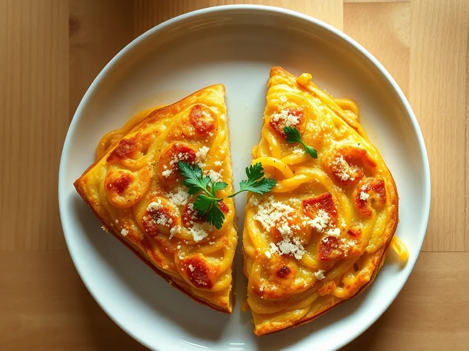

Фриттата с макаронами
Вчерашние макароны, залитые яйцами с сыром и обжаренные одним пирогом на сковороде
20 мин2 порц.565 ккал на порциюБ 31 · Ж 30 · У 41Итальянская кухня
Открыть в приложении: порции, таймеры, список покупок
Продукты на 2 порц.
- Макароны варёные (остались)250 г
- Яйцо куриное4 шт
- Молоко50 мл
- Пармезан50 г
- Сливочное масло10 г
- Оливковое масло1 ст. л.
- Соль1 щеп.
- Перец чёрный молотыйпо вкусу
- Петрушка по желаниюпо вкусу
Как готовить
- Взбейте вилкой яйца с молоком, солью и перцем 1 минуту, вмешайте половину тёртого пармезана.
- Смешайте яичную массу с холодными макаронами, чтобы каждая макаронина была в яйце.
- Разогрейте на сковороде сливочное и оливковое масло на среднем огне 1 минуту, выложите макароны и разровняйте.
- Жарьте под крышкой на слабом огне 8-10 минут, пока края не схватятся, а середина почти перестанет дрожать.
- Переверните фриттату с помощью тарелки обратно на сковороду и жарьте ещё 2-3 минуты до золотистой корочки.
- Посыпьте оставшимся сыром и петрушкой, нарежьте треугольниками.
Совет. Лучше всего подходят спагетти или длинные макароны: они сцепляются и держат форму, а пармезан можно заменить любым твёрдым сыром.